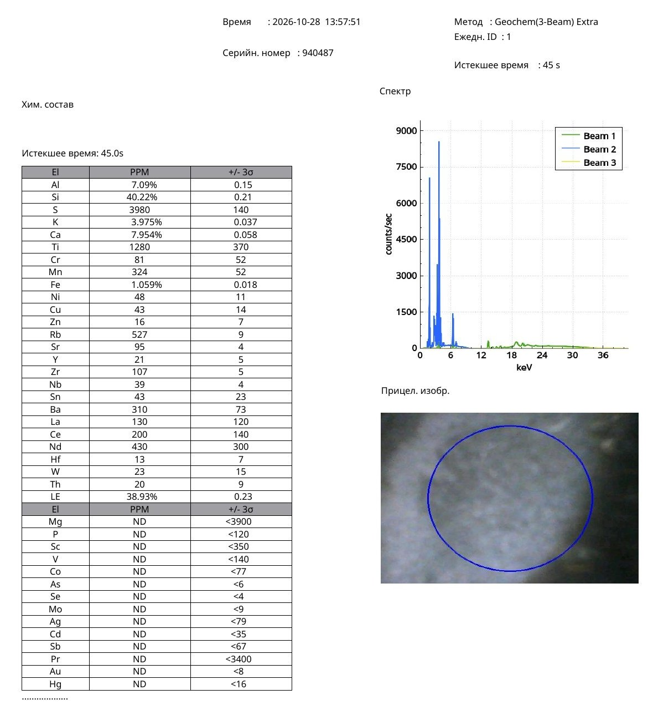
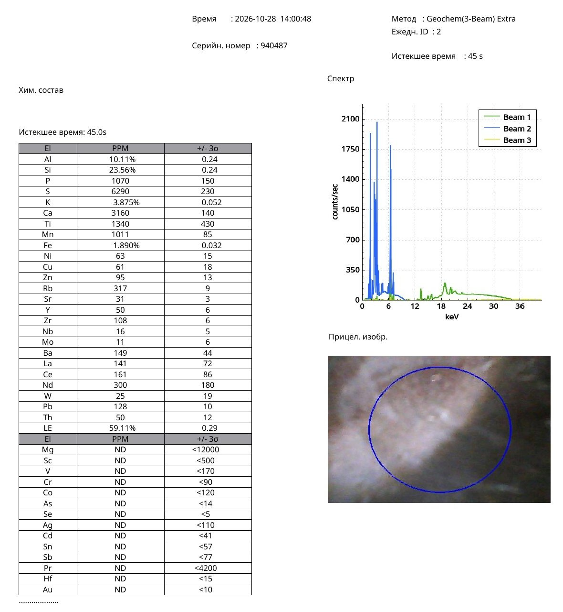

Research Article · Reference Object ro-yuan-021
A Yuan-Dynasty Longquan Celadon Vase with Twin Loop Handles and a Lobed Body: Comparative Portable X-Ray Fluorescence Analysis of the Glaze and Ceramic Body
Nona Dronova — Independent Researcher — 2026 — Research Article · Chinese Ceramic Archaeometry · Yuan Dynasty · Longquan Celadon
Abstract
This article presents a non-destructive archaeometric investigation of a Yuan-dynasty Longquan celadon vase distinguished by a tall, outward-flaring neck, two small loop handles at the shoulders, a vertically lobed globular body, and a smooth grey-green glaze.
The study combines morphological and photographic documentation with two original portable X-ray fluorescence (pXRF) measurements conducted separately on the glazed surface and the unglazed ceramic body at the base.
The glaze measurement recorded Si 40.22 wt%, Al 7.09 wt%, Ca 7.954 wt%, K 3.975 wt%, and Fe 1.059 wt%. The unglazed body recorded Si 23.56 wt%, Al 10.11 wt%, Ca 0.316 wt%, K 3.875 wt%, and Fe 1.890 wt%.
The results reveal pronounced chemical differentiation between glaze and ceramic body. Calcium is approximately 25.2 times more concentrated in the measured glaze than in the exposed body, while iron is approximately 1.8 times more concentrated in the body than in the glaze.
Comparative analysis incorporates published wavelength-dispersive X-ray fluorescence (WDXRF) results from the Dayao, Xikou, and Jincun kiln areas, together with archaeological data from Yuan-period Longquan celadons.
The analytical findings demonstrate the use of a calcium-bearing silicate glaze over an iron-containing aluminosilicate ceramic body. This technological arrangement corresponds to a major characteristic of historical Longquan celadon production.
The study establishes an original compositional record for the investigated vase and contributes to the comparative archaeometry of Yuan-dynasty Longquan ceramics.
Keywords: Yuan dynasty; Longquan celadon; Chinese porcelain; celadon vase; loop handles; lobed vessel; portable X-ray fluorescence; pXRF; WDXRF; calcium-rich glaze; ceramic body; archaeometry; Dayao; Fengdongyan.
1. Introduction
Longquan celadon occupies a distinguished position in the history of Chinese ceramic production. Manufactured in the Longquan region of Zhejiang Province, its development reached remarkable technical and artistic sophistication during the Southern Song and Yuan dynasties.
The Yuan period (1279–1368) was particularly important for the expansion of Longquan ceramic production and the development of a diverse range of vessel forms, including large jars, bottles, vases, dishes, and ritual or decorative objects.
Longquan ceramics are renowned for their high-fired stoneware or porcelain bodies and carefully formulated celadon glazes. The distinctive green to grey-green coloration results from interactions among iron-bearing compounds, glaze composition, firing conditions, and microstructure.
Modern archaeometric investigations have established that the relationship between glaze and ceramic body is central to understanding Longquan manufacturing technology.
The present article examines a Yuan-dynasty Longquan celadon vase from a private research collection, designated Sample No. 1.
The vase is characterized by a tall, flaring neck, two loop handles positioned symmetrically on the shoulders, and a globular body articulated by vertical lobes.
Its surface is covered by a smooth, lustrous grey-green glaze.
The investigation focuses on two separate pXRF measurements: one taken directly from the glazed surface and the second from the exposed ceramic body at the base.
This paired analytical approach allows the chemical characteristics of the glaze and body to be evaluated independently and compared with published archaeological material.
2. Object Description
2.1. General morphology
The investigated vessel is a tall ceramic vase with a distinctive architectural silhouette.
The neck rises from the shoulders in a relatively narrow cylindrical form before expanding outward toward the mouth.
The upper rim is broad and slightly flared.
The body is globular, with its maximum diameter located below the shoulder.
The exterior is divided into pronounced vertical lobes extending downward from the shoulder region and creating a rhythmic, flower-like profile.
Two small loop handles are positioned symmetrically on opposite sides of the neck–shoulder junction.
Each handle is pierced, forming an oval opening.
The handles are integrated into the vessel’s overall profile and provide a characteristic decorative accent.
2.2. Glaze characteristics
The vase is covered by a smooth grey-green celadon glaze.
The surface displays a continuous, softly reflective finish, with subtle variation in tone caused by lighting, curvature, and glaze thickness.
The vertical lobes are emphasized by changes in reflected light.
The visible glaze is relatively uniform and lacks the conspicuous large-scale crackle associated with some other Chinese ceramic traditions.
Its appearance is consistent with the restrained aesthetic of historical Longquan celadons.
2.3. Ceramic body
The unglazed ceramic body was examined at the base of the vessel.
The exposed surface provided a separate analytical area for portable XRF measurement.
This distinction is particularly important because the composition of a celadon glaze differs substantially from that of the ceramic body beneath it.
The present study therefore treats the glaze and body as two technologically distinct ceramic materials.
3. Materials and Methods
3.1. Investigated object
The vase was designated:
Sample ID: 1
Object: Yuan-dynasty Longquan celadon vase
Research collection: Private collection
Analytical date: 28 October 2026
Two measurement areas were selected:
- Grey-green glazed surface.
- Unglazed ceramic body at the base.
3.2. Portable X-ray fluorescence analysis
The measurements were performed using a portable X-ray fluorescence instrument.
Table 1. Analytical conditions.
| Parameter | Glaze measurement | Body measurement |
|---|---|---|
| Sample ID | 1 | 1 |
| Project designation | ваза | ваза niz |
| Daily measurement ID | 1 | 2 |
| Date | 28 October 2026 | 28 October 2026 |
| Time | 13:57:51 | 14:00:48 |
| Instrument serial number | 940487 | 940487 |
| Analytical method | Geochem (3-Beam) Extra | Geochem (3-Beam) Extra |
| Acquisition duration | 45 s | 45 s |
| Measurement type | In situ | In situ |
| Analyzed material | Glaze | Unglazed body |
The original analytical reports provide elemental concentrations and instrumental uncertainties expressed as three standard deviations.
The measurements were performed without removing material from the object.
3.3. Analytical considerations
Portable XRF provides valuable non-destructive elemental information but requires careful interpretation when applied to glazed ceramics.
The measured signal can be influenced by glaze thickness, surface curvature, substrate contribution, and matrix effects.
The instrument’s Geochem mode reports elemental concentrations rather than a fully calibrated and normalized ceramic oxide composition.
Accordingly, the present study preserves the original elemental measurements as the primary analytical data.
Theoretical oxide equivalents are provided only as secondary calculations for contextual comparison with published ceramic-science literature.
3.4. Comparative archaeological data
The original measurements were compared with published analytical investigations of Longquan ceramics.
Particular attention was given to studies employing X-ray fluorescence spectroscopy on excavated materials from the Dayao, Xikou, Jincun, and Fengdongyan kiln areas.
These archaeological datasets provide a technological reference for the distribution of calcium, iron, aluminium, potassium, and other elements between glaze and ceramic body.
4. Original Analytical Results
4.1. Major elemental composition
Table 2. Major and selected minor elements measured by pXRF.
| Element | Grey-green glaze | Unglazed body |
|---|---|---|
| Silicon (Si) | 40.22 wt% | 23.56 wt% |
| Aluminium (Al) | 7.09 wt% | 10.11 wt% |
| Calcium (Ca) | 7.954 wt% | 0.316 wt% |
| Potassium (K) | 3.975 wt% | 3.875 wt% |
| Iron (Fe) | 1.059 wt% | 1.890 wt% |
| Titanium (Ti) | 1,280 ppm | 1,340 ppm |
| Manganese (Mn) | 324 ppm | 1,011 ppm |
| Rubidium (Rb) | 527 ppm | 317 ppm |
| Strontium (Sr) | 95 ppm | 31 ppm |
| Zirconium (Zr) | 107 ppm | 108 ppm |
| Barium (Ba) | 310 ppm | 149 ppm |
| Nickel (Ni) | 48 ppm | 63 ppm |
| Copper (Cu) | 43 ppm | 61 ppm |
| Zinc (Zn) | 16 ppm | 95 ppm |
The elemental data demonstrate clear differences between the two measured ceramic surfaces.
Original pXRF Protocols — Olympus analyser, 28 October 2026

Figure 6. Original portable X-ray fluorescence report for the grey-green glaze, measurement ID 1, 28 October 2026. Click to open full size.

Figure 7. Original portable X-ray fluorescence report for the unglazed ceramic body, measurement ID 2, 28 October 2026. Click to open full size.
4.2. Calcium distribution
The most pronounced contrast concerns calcium.
The glazed surface contains 7.954 wt% Ca, compared with only 0.316 wt% in the unglazed body.
The concentration ratio is:
Caglaze / Cabody = 7.954 / 0.316 ≈ 25.2
Thus, the measured glaze contains approximately 25.2 times more calcium than the exposed ceramic body.
This substantial enrichment is characteristic of a glaze formulation incorporating a significant calcium-bearing flux component.
Historical Longquan celadon technology employed calcium-containing glaze systems whose chemistry differs markedly from the underlying ceramic body.
The result therefore provides a particularly informative technological observation.
4.3. Iron distribution
Iron displays the opposite distribution.
The glazed surface contains 1.059 wt% Fe, while the unglazed body contains 1.890 wt% Fe.
The body-to-glaze concentration ratio is:
Febody / Feglaze = 1.890 / 1.059 ≈ 1.78
The exposed ceramic body is therefore approximately 1.8 times richer in iron than the measured glaze.
Iron-bearing compounds are important both in the coloration of celadon glazes and in the firing behavior and appearance of ceramic bodies.
The observed distribution provides an additional characteristic for comparison with archaeological Longquan materials.
4.4. Aluminium and silicon
Aluminium is more concentrated in the unglazed body than in the glaze:
- Glaze: 7.09 wt% Al.
- Body: 10.11 wt% Al.
This is consistent with a relatively alumina-rich ceramic body compared with the glaze.
Silicon is reported at 40.22 wt% in the glaze and 23.56 wt% in the body.
Because pXRF measurements in geochemical mode are affected by matrix composition and the treatment of light elements, these values should not be interpreted as complete bulk ceramic compositions.
Nevertheless, they establish an independently recorded contrast between the two measured surfaces.
4.5. Potassium and trace elements
Potassium concentrations are relatively similar in the two measurements:
- Glaze: 3.975 wt%.
- Body: 3.875 wt%.
Rubidium and strontium are more concentrated in the glaze than in the body.
Manganese displays the opposite pattern, with 324 ppm in the glaze and 1,011 ppm in the body.
These trace-element relationships provide additional comparative information relevant to studies of ceramic raw materials and technological traditions.
5. Theoretical Oxide Equivalents
Selected elemental values were converted into theoretical oxide equivalents using stoichiometric conversion factors.
Table 3. Calculated oxide equivalents of the measured surfaces.
| Oxide | Glaze | Unglazed body |
|---|---|---|
| SiO₂ | 86.04 wt% | 50.40 wt% |
| Al₂O₃ | 13.40 wt% | 19.10 wt% |
| CaO | 11.13 wt% | 0.44 wt% |
| K₂O | 4.79 wt% | 4.67 wt% |
| Fe₂O₃ | 1.51 wt% | 2.70 wt% |
| TiO₂ | 0.21 wt% | 0.22 wt% |
| MnO | 0.042 wt% | 0.131 wt% |
Methodological note: These values are theoretical equivalents calculated independently from the elemental pXRF readings. They are not normalized to 100%, and they must not be treated as directly measured bulk oxide compositions. Their purpose is to facilitate qualitative comparison with published ceramic analyses.
6. Comparative Archaeometry of Longquan Celadons
6.1. Published WDXRF investigations
Feng and colleagues (2008) investigated ancient Longquan ceramics using wavelength-dispersive X-ray fluorescence.
Their research included ceramic materials from the Dayao, Xikou, and Jincun kiln areas.
The study provided separate chemical analyses of ceramic glazes and bodies.
This distinction is especially relevant to the present investigation because the Yuan vase was likewise examined through paired measurements of the glaze and exposed body.
6.2. Published glaze compositions
Table 4. Mean compositions of archaeological Longquan glazes reported by Feng et al. (2008).
| Oxide | Dayao, Southern Song–Yuan | Xikou, Southern Song–Yuan | Jincun, Northern Song |
|---|---|---|---|
| SiO₂ | 72.20% | 73.80% | 71.60% |
| Al₂O₃ | 17.90% | 17.60% | 18.30% |
| K₂O | 3.42% | 3.14% | 2.12% |
| CaO | 4.54% | 4.00% | 6.63% |
| Fe₂O₃ | 0.87% | 0.85% | 0.73% |
| TiO₂ | 0.049% | 0.055% | 0.092% |
| MnO | 0.32% | 0.17% | 0.41% |
The published results demonstrate that calcium, potassium, and iron are important constituents of historical Longquan glazes.
The investigated vase likewise exhibits a calcium-bearing glaze containing measurable potassium and iron.
The absolute oxide values cannot be compared as though obtained by identical analytical methods, but the elemental relationships are technologically informative.
6.3. Published ceramic body compositions
Table 5. Mean compositions of archaeological Longquan ceramic bodies reported by Feng et al. (2008).
| Oxide | Dayao, Southern Song–Yuan | Xikou, Southern Song–Yuan | Jincun, Northern Song |
|---|---|---|---|
| SiO₂ | 67.40% | 68.20% | 73.00% |
| Al₂O₃ | 28.20% | 25.70% | 23.80% |
| K₂O | 3.09% | 2.04% | 1.86% |
| CaO | 0.028% | 0.033% | 0.024% |
| Fe₂O₃ | 0.86% | 1.03% | 0.97% |
| TiO₂ | 0.068% | 0.172% | 0.186% |
| MnO | 0.048% | 0.023% | 0.013% |
The low calcium concentrations reported for archaeological Longquan ceramic bodies provide a useful parallel to the relatively calcium-poor unglazed base of the investigated vase.
The original pXRF measurement of the vase’s exposed body recorded 0.316 wt% Ca, equivalent to approximately 0.44 wt% CaO.
Although this calculated value is higher than the means reported by Feng et al., it is much lower than the calcium concentration of the vase’s glaze.
The strong glaze–body calcium contrast is therefore consistent with a central technological distinction documented in historical Longquan production.
7. Individual Yuan-Period Archaeological Comparisons
A recent archaeometric study, Compositional and Microstructural Evolution of Longquan Celadon from the Southern Song to Ming Periods (2026), provides individual glaze and body analyses from Yuan-period archaeological contexts.
These data are particularly valuable because they permit comparison with specific excavated specimens rather than only broad chronological averages.
7.1. Yuan-period glaze compositions
Table 6. Published compositions of selected Yuan-period Longquan glazes.
| Archaeological sample | SiO₂ | Al₂O₃ | K₂O | CaO | Fe₂O₃ |
|---|---|---|---|---|---|
| DYSTC-1 | 74.27 | 12.18 | 5.33 | 4.80 | 1.31 |
| DYSTC-2 | 68.50 | 14.95 | 5.21 | 6.85 | 1.10 |
| DYSTC-3 | 69.41 | 12.19 | 5.54 | 6.81 | 2.02 |
| DYSTC-4 | 72.97 | 12.43 | 4.80 | 6.15 | 1.50 |
| DYSTC-5 | 72.10 | 11.93 | 5.28 | 5.04 | 1.70 |
| DYMLY-1 | 70.30 | 13.33 | 4.03 | 7.66 | 1.70 |
All values are reported in wt% oxide.
The archaeological samples demonstrate variability within the Yuan-period Longquan glaze tradition.
Their iron oxide concentrations range from approximately 1.10 to 2.02 wt%, while calcium oxide ranges from approximately 4.80 to 7.66 wt%.
The investigated vase has a theoretical Fe₂O₃ equivalent of approximately 1.51 wt%, falling within the reported archaeological range.
Its theoretical Al₂O₃ equivalent of approximately 13.40 wt% also falls within the published range.
The theoretical K₂O equivalent of approximately 4.79 wt% likewise lies within the reported interval.
These correspondences are notable, although the methodological difference between the original pXRF results and published normalized oxide analyses must remain explicit.
7.2. Yuan-period ceramic body compositions
Table 7. Published compositions of selected Yuan-period Longquan ceramic bodies.
| Archaeological sample | SiO₂ | Al₂O₃ | K₂O | CaO | Fe₂O₃ |
|---|---|---|---|---|---|
| DYSTC-1 | 66.05 | 23.20 | 5.28 | 0.19 | 2.15 |
| DYSTC-2 | 65.80 | 23.03 | 6.09 | 0.55 | 2.00 |
| DYSTC-3 | 68.91 | 20.57 | 6.92 | 0.17 | 1.54 |
| DYSTC-4 | 64.19 | 24.47 | 6.73 | 0.18 | 2.23 |
All values are reported in wt% oxide.
The investigated vase’s theoretical CaO equivalent for the unglazed body is approximately 0.44 wt%.
This value falls within the range of the four selected archaeological samples, approximately 0.17–0.55 wt%.
The iron oxide equivalent of the vase’s body, approximately 2.70 wt%, is higher than the values of the four listed specimens, while its calculated aluminium and silicon oxide equivalents are lower.
These differences demonstrate the importance of preserving analytical method distinctions and considering variation in ceramic raw materials.
The comparison nevertheless establishes a meaningful framework for the study of the vase’s ceramic body.
8. Technological Interpretation
8.1. Calcium-bearing celadon glaze
The substantial calcium concentration recorded in the glaze is one of the strongest technological findings of the present study.
Calcium-bearing fluxes were important in the development of historical Chinese high-temperature glazes.
The measured glaze contains approximately 25 times more calcium than the exposed ceramic body.
Such differentiation is consistent with the use of a deliberately formulated glaze distinct from the underlying body material.
8.2. Iron and grey-green coloration
The vase’s grey-green color is characteristic of the celadon aesthetic.
Iron-bearing compounds contribute to celadon coloration, with the final hue influenced by oxidation state, firing atmosphere, and glaze structure.
The glaze contains 1.059 wt% elemental iron.
This concentration is compatible with an iron-bearing celadon glaze system.
The present pXRF analysis does not determine the proportions of Fe²⁺ and Fe³⁺. Those oxidation states would require additional spectroscopic investigation.
8.3. Iron-rich ceramic body
The unglazed base contains 1.890 wt% iron, exceeding the concentration measured in the glaze.
This contrast demonstrates that the ceramic body and glaze possess distinct iron concentrations.
The difference may reflect the use of different raw material mixtures and the distribution of iron-bearing minerals in the ceramic body.
8.4. Trace-element relationships
The measured titanium, manganese, rubidium, strontium, and zirconium concentrations provide additional information relevant to ceramic provenance studies.
In the investigated vase:
- Titanium concentrations are similar in glaze and body.
- Manganese is substantially higher in the body.
- Rubidium is higher in the glaze.
- Strontium is higher in the glaze.
- Zirconium is almost identical in the two measured surfaces.
These patterns may be compared with future datasets from excavated Longquan kiln materials.
9. Morphological Context and Yuan-Dynasty Longquan Production
The investigated vase combines several distinctive formal features:
- A tall, outward-flaring neck.
- Two small pierced loop handles.
- A rounded, vertically lobed body.
- A smooth grey-green celadon glaze.
These elements situate the vessel within the broader visual and technological vocabulary of Yuan-dynasty Longquan ceramics.
A particularly relevant museum comparison is the Bottle Vase with Ornamental Ring Handles: Longquan Ware, dated to the fourteenth century and preserved in the Cleveland Museum of Art (accession no. 1964.184).
The Cleveland vessel shares the general arrangement of a tall neck, rounded body, and paired shoulder ornaments.
The comparison is especially useful for understanding the formal development of Yuan-period Longquan vases.
The present vase has its own distinctive combination of lobed body articulation, integrated loop handles, and smooth monochrome glaze.
10. Discussion
The combined morphological and compositional evidence provides a substantial foundation for understanding the investigated vessel as a Yuan-dynasty Longquan celadon vase.
The most important analytical observation is the pronounced difference between the glaze and ceramic body.
Calcium is highly concentrated in the glaze, while iron, aluminium, and manganese are more abundant in the exposed body.
This distribution is consistent with the technological separation of glaze and body materials documented in historical Chinese celadon manufacture.
Published archaeological studies provide relevant comparisons, particularly through the compositional variability recorded among Yuan-period Longquan glazes and bodies.
The theoretical oxide equivalents calculated for the investigated vase show numerical correspondences with published Yuan-period specimens for several important constituents, including aluminium, potassium, and iron in the glaze and calcium in the body.
At the same time, the silicon and calcium values demonstrate the limits of direct numerical comparison between surface pXRF readings and normalized laboratory oxide compositions.
The original elemental measurements therefore remain the primary evidence presented in this study.
The vessel’s formal characteristics, smooth grey-green surface, and paired shoulder handles complement the analytical findings and provide an integrated basis for technological and art-historical discussion.
11. Conclusions
The present study documents the elemental composition of a Yuan-dynasty Longquan celadon vase through two original non-destructive portable X-ray fluorescence measurements.
The investigation establishes five principal findings.
First, the glaze is characterized by a substantial calcium concentration of 7.954 wt%, together with silicon, aluminium, potassium, and iron.
Second, the exposed ceramic body contains only 0.316 wt% calcium, approximately 25 times less than the measured glaze.
Third, iron is more concentrated in the body than in the glaze, at 1.890 wt% and 1.059 wt%, respectively.
Fourth, the chemical distinction between glaze and body is consistent with the technological organization of historical Longquan celadon production, as documented in published archaeological studies.
Fifth, the vessel’s tall flaring neck, paired loop handles, vertically lobed body, and smooth grey-green glaze provide important morphological characteristics for comparison with Yuan-dynasty Longquan ceramics.
The study contributes an original paired pXRF dataset and a comparative archaeological framework for the continued investigation of Yuan-period Longquan ceramic technology.
The planned inclusion of macroscopic photographs, base documentation, and microphotographs will further strengthen the visual record accompanying the chemical analysis.
12. Figures
Figure 1. Yuan-dynasty Longquan celadon vase, Sample No. 1. General frontal view showing the flaring neck, twin loop handles, vertically lobed globular body, and smooth grey-green glaze.
Figure 2. Detail of the vase’s shoulder and loop handles, showing their integration into the neck–body transition.
Figure 3. Base of the vase, showing the exposed unglazed ceramic body analyzed by pXRF.
Figure 4. Microphotograph of the grey-green celadon glaze, documenting surface texture and optical characteristics.
Figure 5. Microphotograph of the ceramic body at the base, documenting the exposed ceramic material.
Figure 6. Original portable X-ray fluorescence report for the grey-green glaze, measurement ID 1, 28 October 2026.
Figure 7. Original portable X-ray fluorescence report for the unglazed ceramic body, measurement ID 2, 28 October 2026.
Figure 8. Comparative diagram of calcium, iron, aluminium, and potassium concentrations in the glaze and ceramic body.
13. References
Feng, S. et al. (2008). Nondestructive analysis on ancient porcelain of Longquan kiln by WDXRF. Chinese Physics C, 32, 284–288. https://csnsdoc.ihep.ac.cn/article/id/ed035228-b6ad-4356-ab40-46b6e2efc1bf
Li, et al. (2012). Study on elemental features of Longquan celadon at Fengdongyan kiln site in Yuan and Ming dynasties by EDXRF. Nuclear Instruments and Methods in Physics Research Section B. https://doi.org/10.1016/j.nimb.2012.09.034
Li, et al. (2011). Study on the chemical composition features of Longquan celadon excavated from the Chuzhou site of Huai’an City in Jiangsu Province by EDXRF. Chinese Physics C, 35(7). https://doi.org/10.1088/1674-1137/35/7/016
Compositional and Microstructural Evolution of Longquan Celadon from the Southern Song to Ming Periods. (2026). Inorganics, 14(6), Article 151. https://doi.org/10.3390/inorganics14060151
Kerr, R., & Wood, N. (2004). Science and Civilisation in China, Volume 5: Chemistry and Chemical Technology, Part 12: Ceramic Technology. Cambridge University Press.
Cleveland Museum of Art. Bottle Vase with Ornamental Ring Handles: Longquan Ware. Yuan dynasty, 14th century. Accession no. 1964.184. https://www.clevelandart.org/art/1964.184
14. Data Availability
The original analytical records comprise two portable X-ray fluorescence measurements performed on 28 October 2026.
Both measurements were obtained using instrument serial number 940487 and the Geochem (3-Beam) Extra method with an acquisition duration of 45 seconds.
The first measurement was performed on the grey-green glaze.
The second measurement was performed on the exposed ceramic body at the base.
The original analytical reports and accompanying photographic documentation are intended for inclusion as supplementary research materials in the Zenodo deposit.
15. Author Contributions
Nona Dronova: Research conception, selection of the investigated object, photographic documentation, coordination of portable X-ray fluorescence measurements, comparative archaeometric research, and interpretation of the findings.
16. Image Credits
Photographs and microphotographs of the investigated Yuan-dynasty Longquan celadon vase: Nona Dronova, private research collection.
17. Suggested Citation
Dronova, N. (2026). A Yuan-Dynasty Longquan Celadon Vase with Twin Loop Handles and a Lobed Body: Comparative Portable X-Ray Fluorescence Analysis of the Glaze and Ceramic Body. Zenodo. https://doi.org/10.5281/zenodo.23818382
Suggested Zenodo resource type: Publication — Preprint
Suggested license: Creative Commons Attribution 4.0 International (CC BY 4.0).
Suggested subjects: Chinese ceramics; Yuan dynasty; Longquan celadon; Archaeometry; X-ray fluorescence; Ceramic technology; Cultural heritage science.
Supplementary materials: Original pXRF reports; general object photographs; base photographs; glaze and ceramic body microphotographs.